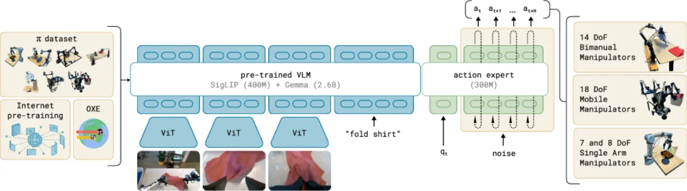
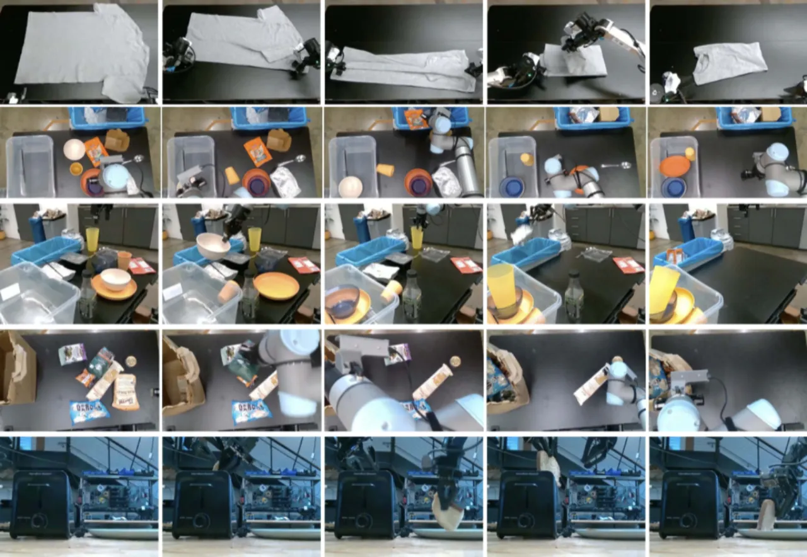
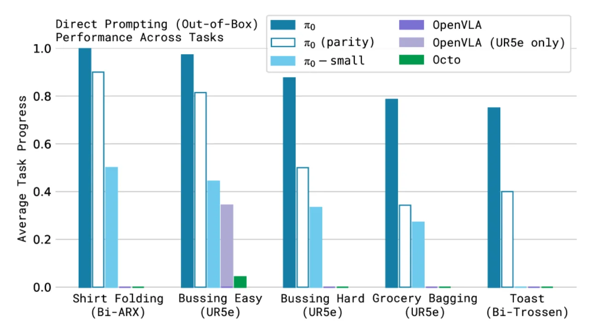
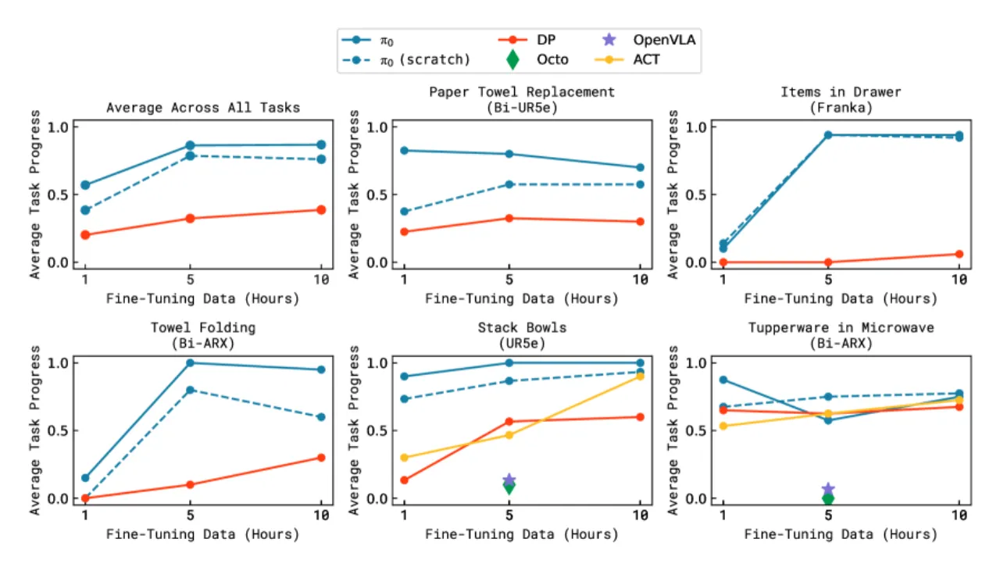
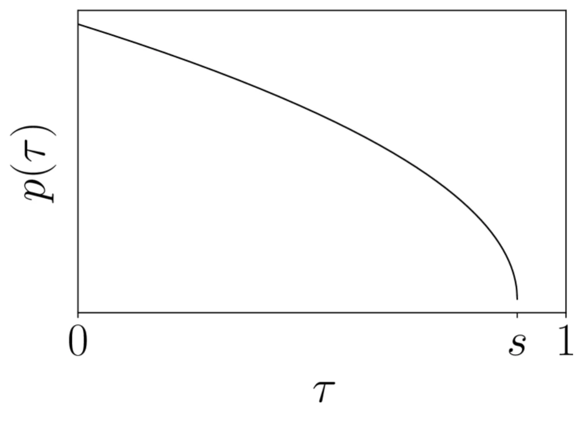
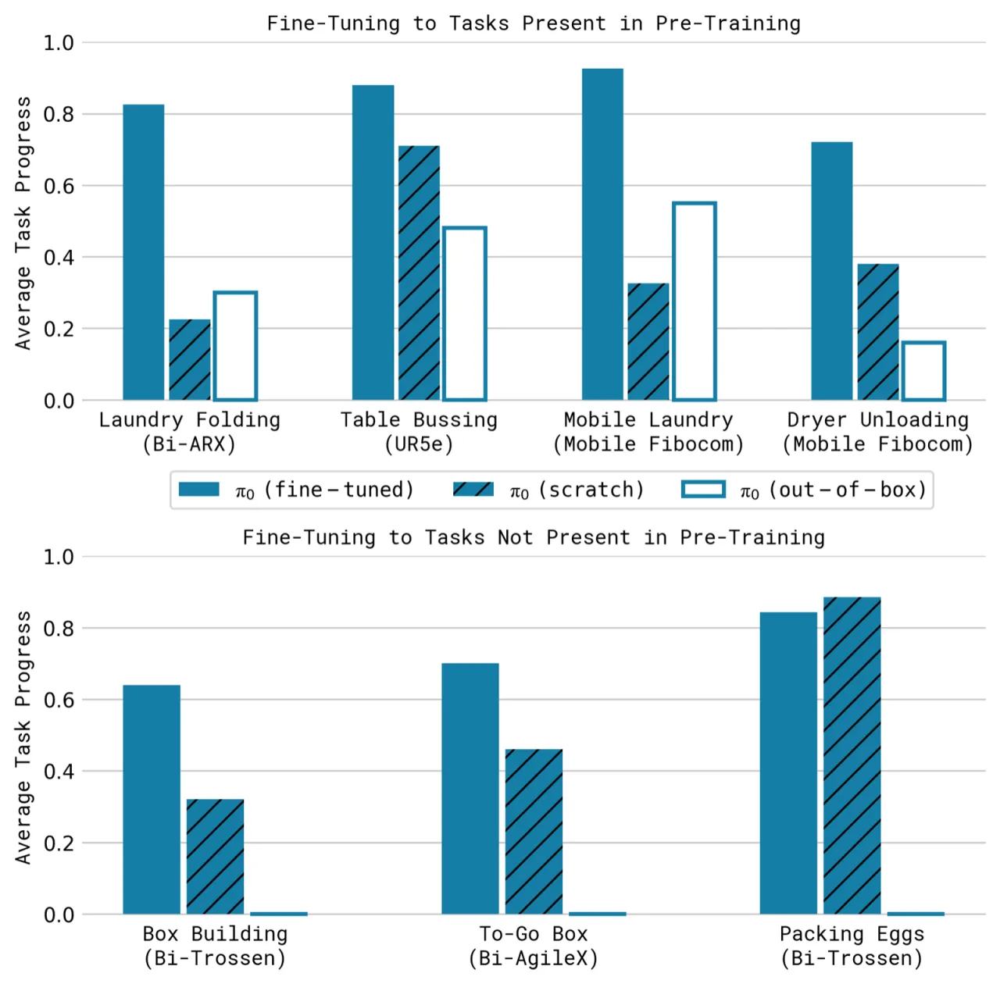

π₀ 是一个通用机器人基础模型框架，将预训练视觉-语言模型（VLM）与基于流匹配（flow matching）的 action expert 相结合，在 7 种机器人平台、68 个任务上联合训练，既可开箱即用（zero-shot），也可针对复杂精细操作任务进行 fine-tuning，实现了叠衣物、清洁桌面、拼装纸板箱等高难度长时序任务。
机器人学习要达到人类般的灵活性与泛化能力，面临三大核心障碍：数据规模不足、模型泛化能力弱以及训练方法不成熟。现有 VLA 模型（如 OpenVLA、Octo）大多采用自回归离散化动作表示，在高频连续控制和精细操作任务上能力受限。
"We propose a novel flow matching architecture built on top of a pre-trained vision-language model (VLM) to inherit Internet-scale semantic knowledge… Our results cover a wide variety of tasks, such as laundry folding, table cleaning, and assembling boxes."

π₀ 的核心设计理念是"预训练 + 后训练"两阶段范式：首先在大规模多样化数据上训练一个广泛泛化的 base model，再用高质量任务数据进行 fine-tuning，使模型既能开箱即用，又能高效掌握精细技能。

将来自 7 种机器人平台（Bimanual UR5e、Bimanual Trossen、Bimanual ARX、UR5e、Franka、Mobile Trossen、Mobile Fibocom）的数据统一编码到同一模型中。不同机器人的 configuration 维度不同（最大 18-DoF），通过 zero-padding 对齐；多余的图像槽位通过 mask 处理。
π₀ 采用条件流匹配（conditional flow matching）建模动作的连续分布：训练目标为 L(θ) = E[‖v_θ(A_t^τ, o_t) − u(A_t^τ | A_t)‖²]，通过强调低 τ（噪声大）时步的 beta 分布采样，使模型专注于精细动作去噪。推理时用 10 步前向欧拉积分从随机噪声 A_t^0 ~ N(0,I) 生成完整的 H=50 步动作块（action chunk），支持最高 50 Hz 的高频控制。
模型实现为单一 Transformer，但使用两套权重（两个"专家"）：图像和语言 token 被路由到 VLM 骨干（PaliGemma，基于 Gemma 2B），而机器人状态 q_t 和动作 token A_t^τ 被路由到独立的 action expert（width=1024，mlp_dim=4096，约 300M 参数）。两套权重仅在 Transformer 自注意力层中交互，确保 VLM 预训练权重不被机器人特化数据破坏，同时保留高精度连续动作建模能力。
π₀ 使用分块因果注意力掩码：块 1 为图像/文本输入（VLM 预训练来的前缀，不可前向关注），块 2 为机器人状态 q_t（独立缓存键值对，不随流匹配步骤变化），块 3 为噪声动作 A_t^τ（全双向注意力，可关注完整输入序列）。此设计保证推理效率：o_t 的键值对可缓存，每次只需重算 action token 的前向传播。

实验设计围绕四个核心问题：（A）π₀ 预训练后的开箱即用能力；（B）语言指令跟随能力；（C）学习新精细任务的效率；（D）掌握复杂多阶段长时序任务的能力。所有定量结果均为 10 轮评测的平均任务完成率（normalized score，满分 1.0）。
在 5 个任务上对比 π₀（700k 步）与 3 条基线（OpenVLA、Octo、π₀-small），每个方法均以语言指令直接驱动。

| 方法 | Shirt Folding (Bi-ARX) | Bussing Easy (UR5e) | Bussing Hard (UR5e) | Grocery Bagging (UR5e) | Toast (Bi-Trossen) |
|---|---|---|---|---|---|
| OpenVLA | — | 低 | 低 | 低 | — |
| Octo | — | 低 | 低 | 低 | — |
| π₀-small (non-VLM) | 低 | 中 | 低 | 低 | 低 |
| π₀ parity (160k) | 中高 | 高 | 中 | 中 | 中 |
| π₀ (700k 步) | ≈1.0 | ≈1.0 | 最高 | 最高 | 最高 |
注：论文 Figure 7 以柱状图展示归一化得分，上表为定性描述；具体数值详见原文图表。
在 3 个任务（bussing、grocery bagging、table setting）的语言跟随实验中，π₀ 的语言跟随准确率显著优于 π₀-small（非 VLM 初始化），表明大规模 VLM 预训练对语言理解能力至关重要。

在 5 个全新或半新任务上，用不同数量（1h、5h、10h）的 fine-tuning 数据对比 π₀（预训练后微调）、π₀-from-scratch、OpenVLA、Octo、ACT、Diffusion Policy。关键结论：

这些任务耗时 5–20 分钟，需要结合数十种子行为（抓取、折叠、展平、放置等）才能完成。论文作者表示："These tasks are very difficult, and we were not able to solve them with other methods." π₀ 是目前端到端机器人学习文献中所展示的最长灵巧操作任务。
"First, our experiments do not yet provide a comprehensive understanding of how the pre-training datasets should be composed: we combined all data available to us, but understanding what type of data is more helpful to add and how it should be weighted remains an open problem."（原文第 VII 节）——尚不清楚哪些数据对模型最有帮助，以及如何合理权衡。
"Not all tasks in our evaluation work reliably, and it remains unclear how to predict how much and what kind of data is needed to attain near-perfect performance."（原文第 VII 节）——当前模型并不能在所有评测任务上稳定达到高分，如何根据任务规划数据收集仍是开放问题。
"Finally, it remains to be seen how much positive transfer there is in combining highly diverse data, particularly from different tasks and different robots: although our results suggest that universal pre-trained robot foundation models might become a reality, it is left for future work to understand whether this universality extends to much more distinct domains, such as autonomous driving, navigation, and legged locomotion."（原文第 VII 节）——迁移效果是否能推广到差异更大的领域（自动驾驶、腿足运动等）仍不确定。
"Training on only this high-quality data results in a brittle model that does not reliably recover from mistakes, while running the pre-trained model in zero shot does not always exhibit the fluent strategies demonstrated in the post-training data."（原文第 VII 节）——post-training 数据质量高但缺乏失败恢复样本，会导致 fine-tuned 模型在出错时缺乏鲁棒性。
流匹配推理需要 10 步前向传播（每步 27 ms），总推理延迟约 73–86 ms（Table I），在 50 Hz 控制下每 0.5 秒重新推理一次。对于需要极低延迟反应的场景（如抓取高速运动物体），这一频率可能仍不够快。此点为推断（inferred from the design），作者在附录 D 中讨论了推理时间但未明确标注为局限性。